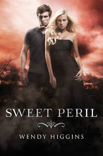

Sweet Peril
Anna Whitt, hija de un ángel y un demonio, se prometió que nunca haría el trabajo de su padre:
contaminar almas. Había sido ingenua en tal afirmación. Había sido ingenua con respecto a muchas cosas.
Atormentada por los demonios Susurradoras, Anna hace lo que puede para sobrevivir, incluso si esto significa
abrazar su lado oscuro y ganarse una reputación no deseada como la chica fiestera de la escuela. Su vida nunca
ha parecido más sombría. Y sobre todo está Kaidan Rowe, hijo del Duque de la Lujuria, asediando su corazón y su mente.
Cuando un mensaje perdido e inesperado de los ángeles aparece, Anna se encuentra viajando por el mundo con Kopano,
hijo de Ira, en un intento de ganar apoyo de los compañeros Nephilim y darles esperanza por primera vez. Pronto se
hace evidente que cualquier libertad que Anna y el resto de los Neph están esperando ganar no será conseguida sin luchar.
Hasta entonces, Anna y Kaidan deben dejar a un lado las cuestiones entre ellos, superar las todavía eróticas tentaciones,
y enfrentar la pregunta definitiva: ¿Vale la pena amar a alguien como para arriesgar sus vidas?